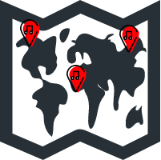

Home
(current)
Ulster
Donegal
Derry
Tyrone
Fermanagh
Cavan
Monaghan
Antrim
Down
Armagh
Munster
Clare
Cork
Kerry
Limerick
Tipperary
Waterford
Leinster
Carlow
Dublin
Kildare
Kilkenny
Laois
Longford
Louth
Meath
Offaly
Westmeath
Wexford
Wicklow
Connacht
Galway
Leitrim
Mayo
Roscommon
Sligo
Submit